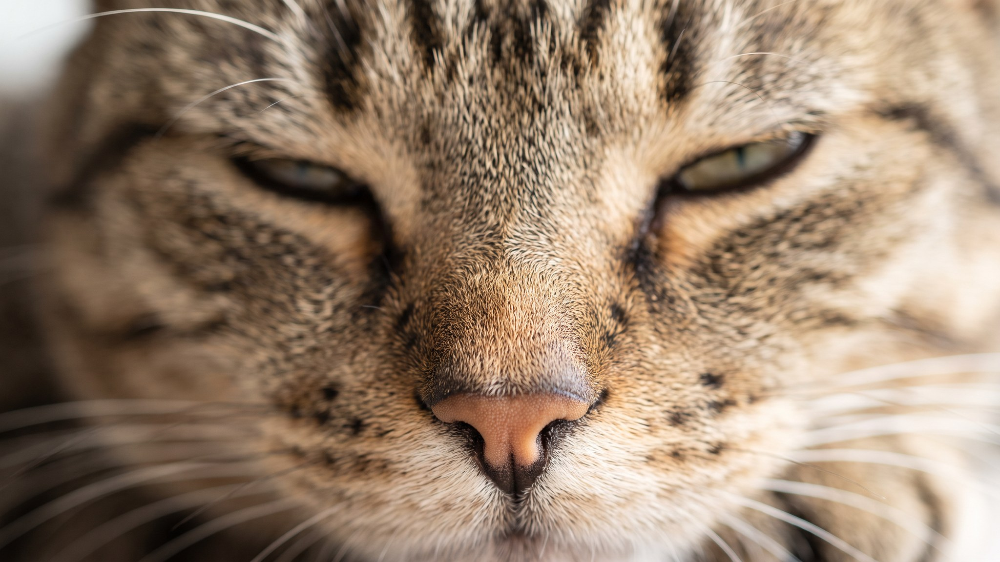

Включили отопление, кошка начала линять сильнее. Это жалоба, которую ветеринары слышат каждый ноябрь. Сухой тёплый воздух в квартире нарушает естественный цикл роста шерсти: кошка «думает», что наступила весна, и начинает обновлять покров вне сезона. Разбираем, сколько шерсти, норма, как расчёсывать, что делать с сухой кожей и когда линька говорит о проблеме.
🐾 Заведите дневник ухода за кошкой
Вес, шерсть, обработки, прививки — всё в одном месте. А если что-то смущает, AI-ветеринар ответит круглосуточно и бесплатно.
Завести дневник → Завести в MAX →
У вас iPhone? AnimaLife есть в App Store
У уличных кошек смена шерсти запускается длиной светового дня. Домашняя кошка живёт при почти постоянном освещении и тепле, поэтому линька у неё идёт весь год, волнами. С началом отопительного сезона воздух в квартире становится суше, влажность падает с 50–60% до 30–40% и ниже. Кожа подсыхает, старый волос выпадает активнее.
Нормальная зимняя линька выглядит так: шерсти на диване и одежде стало заметно больше, чем летом, но на теле кошки нет залысин, кожа розовая и без раздражений, кошка не чешется постоянно.
В период активной линьки расчёсывайте кошку каждый день. Это убирает мёртвый волос раньше, чем кошка его проглотит при самоуходе, и снижает риск образования шерстяных комков в желудке.
Расчёсывайте по ходу роста шерсти, от шеи к хвосту. Не дёргайте расчёску через спутанные участки, разбирайте их пальцами или специальным спреем-кондиционером.
Сухой воздух нарушает влажность кожного покрова. Признаки пересушенной кожи: перхоть на тёмной одежде после поглаживания, шерсть ломается при расчёсывании, кошка чешется чаще обычного.
Что помогает:
Усиленная линька зимой, норма. Но есть признаки, при которых стоит записаться к врачу:
Перечисленные признаки могут указывать на нехватку нутриентов, паразитов или гормональные изменения. Это определяет врач, а не домашние эксперименты.
Материал носит информационный характер и не заменяет очную консультацию ветеринара.
🐾 Чтобы уход не держать в голове
AnimaLife напомнит, когда стричь когти, вычёсывать, купать и обрабатывать от паразитов, и заведёт дневник по вашему питомцу. Бесплатно.
Настроить напоминания → Настроить в MAX →
У вас iPhone? AnimaLife есть в App Store
🐾 Понравился разбор?
Подпишитесь на канал — каждый день разбираем по одному тревожному симптому у кошек и собак: что в пределах нормы, а когда пора к врачу. Подпишитесь, чтобы не пропустить разбор, который может спасти здоровье вашего питомца.